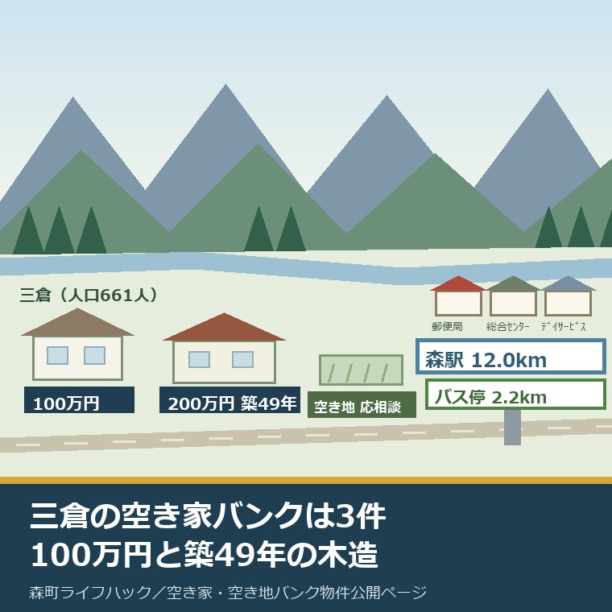
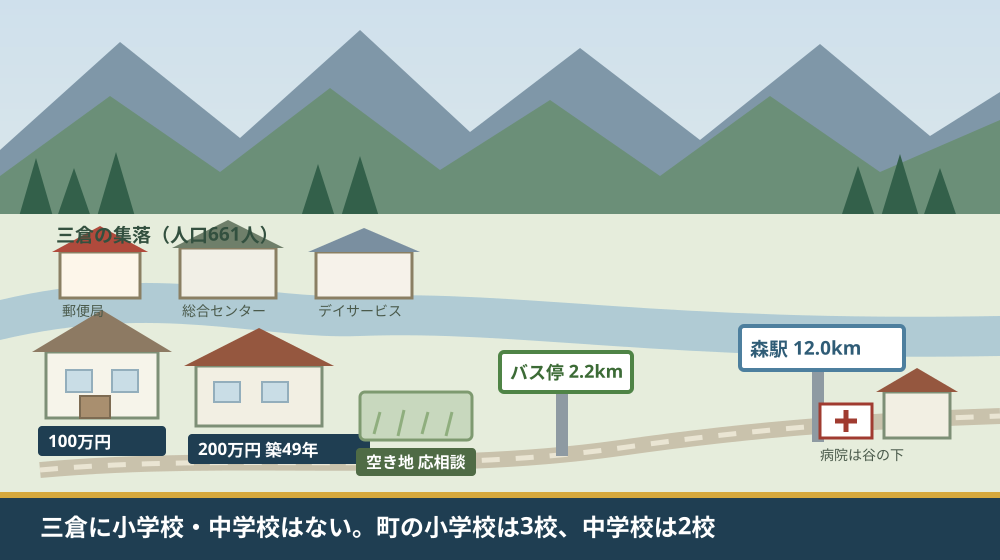
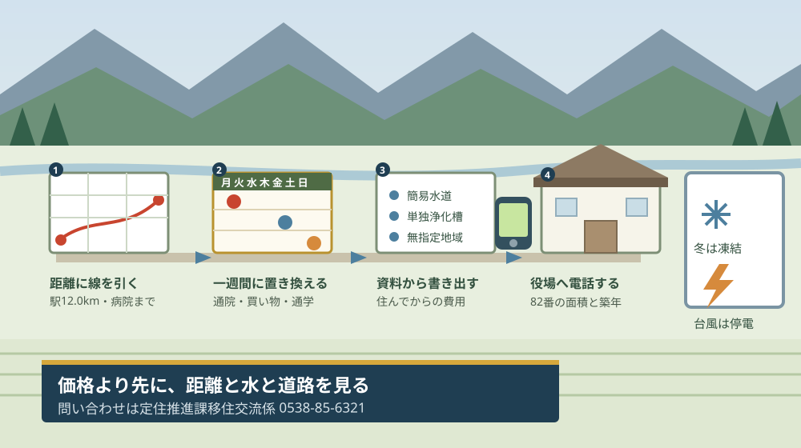

森町三倉の空き家バンク3件｜100万円と築49年の木造

この記事の要点
Q. 森町の三倉に安い空き家が出ていると聞きました。どんな物件ですか。
A. 2026年8月28日時点で3件です。空き家が100万円（登録番号82）と200万円・価格応相談（127）、空き地が1件（122・応相談）。127番は延床167.4平方メートル・木造・昭和52年4月築。空き地の資料には遠州森駅まで12.0キロメートルと書かれています。
静岡県周智郡森町（遠州森町）の北の端に、三倉地区があります。山あいの谷に沿って集落が続く、町でいちばん人口の少ない地区です。この記事は、その三倉の空き家・空き地を実際に検討し始めた方に向けて書いています。
私は磐田市で小さな不動産業を営みながら、森町の空き家や実家じまいのご相談を受けています。三倉の話になると、価格の前に必ず出てくる質問があります。「そこから病院まで何分かかりますか」です。
今日は2026年8月28日です。森町の「空き家・空き地バンク物件公開ページ」の更新日は、この日と同じ2026年8月28日でした。この記事の3件は、今日の一覧を数えたものです。
先にお断りします。この記事の件数・単価・割合は、私が公開ページと物件詳細PDFから数えて計算したものです。森町が公表している数字ではありません。分母は必ず書きます。
公式情報から確定できること
2026年8月28日時点で、森町の公表資料から三倉について確認できたことを並べます。出典は記事の末尾に載せています。
一つ目。所在地が「三倉」と表記されている登録は3件です。空き家が2件（登録番号82と127）、空き地が1件（登録番号122）。公開ページ全体では空き家13件・空き地10件の23件でした。
二つ目。登録番号82は、売却金額100万円です。そして、この物件だけ「物件詳細」のPDFへのリンクがありません。土地面積も延床面積も築年も構造も、公開情報からは確認できません。
三つ目。登録番号127は、売却金額200万円（価格応相談）です。物件詳細によると、土地面積167.81平方メートル、建物は1階94.9平方メートル・2階72.5平方メートルで延床167.4平方メートル。木造で、建築年月日は昭和52年4月です。
四つ目。127番は無指定地域にあります。用途地域の指定がない区域という意味です。水道は簡易水道、浄化槽は単独浄化槽と記載されています。
五つ目。127番の建物の補修の必要は「なし」とされています。未使用年数は2年です。空いてから2年しか経っていない、ということになります。
六つ目。空き地の登録番号122は、価格が「応相談」です。土地面積は108.29平方メートル、建物は0平方メートル。無指定地域です。
七つ目。122番の資料には、距離が2つ書かれています。「秋葉バス（三倉）停 2.2km」と「遠州森駅 12.0km」。この距離の欄が埋まっているのは、23件のうちこの1件だけでした。
八つ目。三倉地区の人口は661人です。森町地域公共交通法定計画（令和6年3月）に載っている令和2年国勢調査の数字で、森6,548人・飯田3,789人・園田3,647人・一宮1,779人・天方1,033人と並ぶ中で最も少ない地区です。
九つ目。三倉の高齢単身世帯は62世帯、高齢夫婦世帯も62世帯です。同じ計画に載っている令和2年の数字で、合わせて124世帯になります。
十番目。町の主要施設・諸団体一覧（更新日2026年8月27日）に載っている三倉の施設は3つです。三倉郵便局（0538-86-0001／森町三倉769）、三倉総合センター（遠州みらい森林組合／0538-86-0211／森町三倉826-2）、三倉デイサービスセンター（0538-86-0860／森町三倉815）。
十一番目。同じ一覧に、三倉の小学校も中学校もありません。森町の小学校は森小学校・宮園小学校・飯田小学校の3校、中学校は森中学校・旭が丘中学校の2校です。
十二番目。公立森町病院の所在地は森町草ヶ谷391-1です。三倉ではありません。同じ一覧に載る森町保健福祉センターと森町地域包括支援センターは、いずれも森町森50-1です。
十三番目。駐在所も三倉にはありません。一覧に載っているのは天方駐在所（森町大鳥居25-1）と一宮駐在所（森町一宮1239-3）です。
十四番目。バンクの利用には書類が要ります。見学や交渉を希望する場合は「利用申込書:様式第8号」と「同意書:様式第2号」を役場定住推進課へ提出します。
十五番目。交渉は先着順です。公開ページは「空き家・空き地の優先交渉権は先着順とします。優先交渉権を得た方の結果が分かるまでは次の方は交渉できません。」と記しています。
十六番目。町は仲介も管理もしません。森町空き家・空き地バンクのページは「町は空き家・空き地に関する情報提供のみを行い、物件の仲介、契約等については、一切行いません。また町は物件の管理を行いません。」としています。
十七番目。担当は定住推進課移住交流係（0538-85-6321）です。所在地は〒437-0293 静岡県周智郡森町森2101-1です。

この絵で描きたかったのは、集落に学校の建物が無いという一点です。郵便局と総合センターとデイサービスセンターは描けましたが、小学校は描けませんでした。町の一覧に無いからです。
もう一つ描いたのは、谷に沿って伸びる一本の道です。三倉の暮らしは、この道の上に並んでいます。買い物も通院も学校も、この道を戻る方向にあります。
三倉の3件を、町全体の23件の中に置く
ここからは数字の割り戻しです。分母を先に書きます。1坪は3.305785平方メートルで換算しました。
まず、件数の割合です。三倉の3件は、公開ページ全23件の13.0パーセントにあたります。一方、三倉の人口661人は町の17,457人の3.79パーセントです。
この2つを並べると、三倉は人口の割合に対して、空き家バンクへの登録が3.4倍多く出ていることになります。人が少ない地区に、売り出しの意思表示が集中しているという形です。
次に、127番の単価です。200万円を延床167.4平方メートルで割ると、1平方メートルあたり約11,900円になります。延床の坪数に直せば50.64坪で、坪あたり約39,500円です。
この約11,900円という数字を、他の物件と並べてみます。価格と延床面積の両方が分かる空き家6件の中で、これが最も低い単価でした。最も高いのは草ケ谷の860万円・延床49.68平方メートルで、1平方メートルあたり約173,100円です。
| 登録番号・所在地 | 価格 | 延床面積 | 1平方メートルあたり（私の計算） | 築年 |
|---|---|---|---|---|
| 116 草ケ谷 | 860万円 | 49.68平方メートル | 約173,100円 | 昭和27年1月（築74年） |
| 115 西俣 | 1,300万円 | 139.32平方メートル | 約93,300円 | 平成6年9月（築31年） |
| 飯101 飯田 | 800万円 | 91.09平方メートル | 約87,800円 | 平成2年11月（築35年） |
| 84 睦実 | 250万円 | 69.41平方メートル | 約36,000円 | 不詳 |
| 91 城下 | 200万円（価格応相談） | 116.10平方メートル | 約17,200円 | 昭和53年10月（築47年） |
| 127 三倉 | 200万円（価格応相談） | 167.40平方メートル | 約11,900円 | 昭和52年4月（築49年） |
この表でいちばん見てほしいのは、下の2行です。城下の91番と三倉の127番は、どちらも200万円（価格応相談）です。ところが延床面積は116.10平方メートルと167.40平方メートル。
差は51.3平方メートル、坪に直すと約15.5坪です。同じ200万円で、三倉のほうが15.5坪ぶん広い建物が付いてきます。築年は127番のほうが1年半ほど古いだけです。
この15.5坪の差は、何と交換されているのか。私は、遠州森駅までの12.0キロメートルだと考えています。この推測の根拠は、空き地122番に書かれた距離の記載と、坪単価の並び方だけです。
だから、私はこう言い切ります。三倉の空き家は、安いのではありません。広いのに低い単価が付いている、というのが実態に近い読み方です。「安い」と「単価が低い」は違います。
空き地122番も見ておきます。土地108.29平方メートル、坪に直すと約32.8坪です。価格は応相談で数字が出ていないため、単価の比較には入れられません。
参考までに、市街地の空き地と面積を並べます。森地区の城下にある空き地73番は276.61平方メートル（約83.7坪）で100万円。122番はその4割弱の広さです。
23件全体の価格の開き方と、地区ごとの並びは森町の空き家バンク23件を地区別の価格差から見た記事にまとめました。六地区それぞれの暮らしの輪郭は森町を六つの地区から見た記事にあります。
三倉で暮らすと、この立地は何を意味するか
公表資料から離れて、三倉に住むという前提で数字を読み直します。ここからは私の判断が混じるので、事実と分けて書きます。
まず、移動です。空き地122番の資料にある「遠州森駅 12.0km」は、片道の距離です。往復すれば24.0キロメートル。これを週に何往復するかで、車の負担が決まります。
通院を週1回、買い物を週2回と置くと、週3往復で72.0キロメートル、月におよそ312キロメートルになります。この置き方は私の仮定で、公表資料に根拠はありません。
次に、バス停までの2.2キロメートルです。これは徒歩で行ける距離ではありません。秋葉バスに乗るためにも、まずバス停まで車で行くことになります。秋葉バスの運賃は2026年に改定されており、その内容は森町のバス運賃が17年ぶりに改定された記事に整理してあります。
学校の話をします。町の主要施設一覧に、三倉の小学校も中学校もありません。森町の小学校は3校、中学校は2校で、いずれも三倉の外にあります。
これは、子育て世帯にとっては通学の設計が先に来るということです。三倉から通う場合の通学方法は、この一覧からは読み取れません。学校教育の担当課に確認する項目として残ります。
医療も同じ形です。公立森町病院は森町草ヶ谷391-1にあります。三倉から見れば、遠州森駅と同じ方向、つまり谷を下る側です。
一方で、三倉の中にあるものもあります。三倉デイサービスセンター（森町三倉815）です。高齢単身世帯62・高齢夫婦世帯62の合計124世帯という地区に、通所の受け皿が地区内にある。これは軽い話ではありません。
移動の代替手段をどう数えるかは三倉・天方で暮らすなら距離より移動の代替を見ると書いた記事にまとめてあります。古い木造の家をどう値打ちと費用に分けるかは友田家住宅から実家の古さを分けて見た記事にあります。
良い点：三倉の登録が示している、よくできているところ
三倉の3件と、それを載せている仕組みには、評価したい点が4つあります。順に書きます。
一つ目。127番の資料が、隠さずに書かれていることです。簡易水道、単独浄化槽、無指定地域。どれも買う側が気にする項目で、書けば敬遠される可能性もあります。それが様式のまま出ています。
二つ目。122番に、駅とバス停までの距離が実数で入っていることです。23件のうち、この欄が埋まっているのはこの1件だけでした。三倉のように中心部から離れた場所ほど、この一行の値打ちが大きくなります。
三つ目。三倉デイサービスセンターが地区内にあることです。人口661人・高齢世帯124世帯の地区で、通所の受け皿を地区内に置いている。三倉に住む方の負担を、町がすでに引き受けている部分だと私は見ています。
四つ目。三倉総合センターが遠州みらい森林組合と同じ場所にあることです。集会施設と森林組合が同じ建物にある。山の仕事と地区の集まりが同じ場所で回っているという意味で、これは三倉らしい形です。
注文したい点：三倉で家を探す側から見て足りないところ
ここからは、三倉の物件を検討している側の立場で、一事業者としての注文を4つ書きます。批判ではなく、使う側から見た報告です。
一つ目。82番に物件詳細のPDFがありません。「三倉 売却金額 100万円」の一行だけです。土地が何平方メートルで、建物が何年の何造りなのかが分かりません。三倉で100万円という数字は目を引くのに、その中身が読めません。
二つ目。距離の欄が、物件ごとに埋まったり空いたりします。122番には駅とバス停までの距離が入っているのに、同じ三倉の127番には入っていません。同じ地区の物件なのに、判断材料の量が違ってしまいます。
三つ目。通学の情報が、物件側にも地区側にもありません。三倉には小学校も中学校も無いことは施設一覧から分かりますが、では三倉の子どもがどう通っているかは、この一覧からは読めません。移住を考える家族が最初に知りたい項目です。
四つ目。三倉に登録が3件あることが、公開ページからは分かりにくいことです。一覧は登録番号順に並んでいて、地区でまとまっていません。三倉で探している人が三倉の物件だけを見るには、23件を上から順に読むしかありません。

この図で一段目に距離を置いたのには理由があります。三倉の物件は、価格を比べる前に距離を測ったほうが、判断が早く済みます。距離で外れるなら、面積を調べる手間が要りません。
三段目に水と浄化槽を置いたのも同じ考え方です。簡易水道と単独浄化槽は、住み始めてからの費用と手間に直結します。127番の資料には、その両方が書いてあります。
対案・結論：今日、ご家族が確かめられること
森町の外に住んでいても、今日のうちに進められることがあります。順番に5つ書きます。役場が閉まっている時間でも、四つ目までは自宅で終わります。
一つ目。地図で、気になる物件から公立森町病院（森町草ヶ谷391-1）までの経路を引いてください。三倉から見れば、駅と病院はおおむね同じ方向にあります。片道の距離と、走る道の幅を見ておきます。
二つ目。ご家族の一週間を、曜日で書き出してください。通院、買い物、通学、集まり。三倉から谷を下る移動が週に何回になるかが並ぶと、12.0キロメートルという数字が自分の生活の数字になります。
三つ目。127番の資料から、簡易水道・単独浄化槽・無指定地域の3つを書き写してください。この3つは、住んでからの費用と、将来建て替えるときの条件に効いてきます。
四つ目。三倉郵便局（森町三倉769）、三倉総合センター（森町三倉826-2）、三倉デイサービスセンター（森町三倉815）までの距離を測ってください。三倉の中にあるのは、この3つです。
五つ目。82番については、定住推進課移住交流係（0538-85-6321）へ電話してください。「登録番号82の土地面積と延床面積と建築年月日を知りたい」と伝えれば足ります。詳細PDFが無い物件は、電話で聞くしかありません。
ここまでやっても、三倉に移るかどうかを今日決める必要はありません。今日の成果は「12.0キロメートルを、自分の一週間に置き換えられた」という一点で十分です。決めるための材料が1つ増えた状態を、私は前進として扱っています。
家族に残す記録
確かめた内容は、その日のうちに1枚にまとめてください。次に開くのが半年後でも、同じ場所から再開できます。
書き出す項目は8つです。①登録番号 ②価格 ③土地面積と延床面積 ④建築年月日 ⑤水道と浄化槽の種類 ⑥遠州森駅までの距離 ⑦公立森町病院までの距離 ⑧確認した日。
加えて、確認できなかったことも同じ紙に残します。「82番は詳細PDFが無く、面積が分からなかった」も記録です。次に役場へ電話するとき、そのまま質問文になります。
最後に、冬と台風の季節に何が起きるかを聞いた記録の欄を作っておいてください。山あいの家では、凍結と停電と倒木が、価格より先に暮らしを左右します。この欄は、現地を見に行った日にしか埋まりません。
大石の視点
ここからは公表資料の話ではなく、私がどう見ているかを書きます。三倉のこの3件について、私が実際に立ち会った場面は手元にありません。だから体験としてではなく、意見として書きます。
私が3件を並べて最初に思ったのは、「127番は、売り急いでいない家だ」ということです。未使用2年、補修の必要なし、価格応相談。傷む前に登録されています。
家は、住まなくなった日から傷み始めます。2年で登録に出したというのは、持ち主が早い段階で判断したということです。山あいの家で、これは珍しいほうだと私は見ています。
一方で、82番については判断を保留します。100万円という数字だけがあって、面積も築年も無い。私はこれを安いとも高いとも言えません。分からないことは分からないと書いておきます。
それから、三倉が人口の3.79パーセントなのに登録の13.0パーセントを占めているという偏りです。この3.4倍という数字を、私はまだどう読むべきか決めかねています。
三倉の持ち主が早めに手を打っていると読むこともできます。逆に、山あいでは民間の流通に乗りにくく、バンクに頼るしかないと読むこともできます。公表資料からは、どちらとも判定できません。
不動産屋としての実感を言えば、後者の要素は確かにあります。市街地から離れるほど、査定に手間がかかり、扱ってくれる業者が減ります。そのとき、登録が無料で、町が窓口になる仕組みは、持ち主にとって現実的な選択肢になります。
その上で、買う側に一つだけ申し上げます。三倉の物件で確認の順番を間違えないでください。価格、面積、築年の順ではなく、距離、水、道路の順です。
距離は今日測れます。水は資料に書いてあります。道路だけは、現地に行かないと分かりません。幅、勾配、冬の凍結、大雨のときの通行止め。この3つ目が、山あいの家で最後に効いてきます。
そして、決めるのは今日でなくて構いません。私は「まだ決めない」という状態を、そのまま尊重します。12.0キロメートルを一週間に置き換えた紙が1枚あれば、半年後の判断はずっと速くなります。
実家の名義、境界、農地、道路まで含めて順に整理したい方は、ふじがおか実家カルテの森町相談窓口もご利用ください。売ると決めていなくても使える整理の道具として作っています。
まとめ
この記事で確認した事実を、最後に並べ直します。すべて2026年8月28日時点で公表されている内容です。
- 森町の空き家・空き地バンク物件公開ページの更新日は2026年8月28日。担当は定住推進課移住交流係（0538-85-6321）
- 所在地が「三倉」と表記されている登録は3件（空き家82・127、空き地122）。公開ページ全体は空き家13件・空き地10件の23件
- 登録番号82は売却金額100万円。物件詳細PDFへのリンクが無く、面積・築年・構造は公開情報から確認できない
- 登録番号127は売却金額200万円（価格応相談）。土地167.81平方メートル、1階94.9・2階72.5で延床167.4平方メートル、木造、昭和52年4月築、無指定地域、簡易水道、単独浄化槽、補修の必要なし、未使用2年
- 空き地122は応相談。土地108.29平方メートル、無指定地域。「秋葉バス（三倉）停 2.2km」「遠州森駅 12.0km」と記載
- 距離の欄が埋まっているのは23件のうち122番の1件のみ
- 三倉の人口は661人で六地区の最少（令和2年国勢調査）。高齢単身世帯62、高齢夫婦世帯62
- 町の主要施設・諸団体一覧（2026年8月27日更新）に載る三倉の施設は、三倉郵便局・三倉総合センター・三倉デイサービスセンターの3つ
- 森町の小学校は森・宮園・飯田の3校、中学校は森中・旭が丘中の2校。いずれも三倉には無い
- 公立森町病院は森町草ヶ谷391-1。駐在所は天方（大鳥居25-1）と一宮（1239-3）で三倉には無い
- 三倉の3件は全23件の13.0パーセント。人口の割合3.79パーセントに対して3.4倍（私の計算）
- 127番は200万円÷延床167.4平方メートルで1平方メートルあたり約11,900円。価格と延床が分かる空き家6件で最も低い単価（私の計算）
- 同じ200万円（価格応相談）の城下91番は延床116.10平方メートル。127番との差は51.3平方メートル、約15.5坪（私の計算）
- 交渉は先着順。見学・交渉には「利用申込書:様式第8号」と「同意書:様式第2号」の提出が必要
- 町は仲介も管理も行わない。登録は無料だが、宅建業者に依頼した場合は報酬が発生する
よくある質問
Q1. 森町三倉の空き家バンクには、今どんな物件が載っていますか。
A1. 2026年8月28日更新の空き家・空き地バンク物件公開ページで、所在地が「三倉」と表記されているのは3件です。空き家が登録番号82（売却金額100万円）と登録番号127（売却金額200万円・価格応相談）、空き地が登録番号122（応相談）。82番だけは物件詳細PDFへのリンクが無く、面積も築年も公開情報からは確認できません。
Q2. 三倉の空き家は、森町の中では安いほうですか。
A2. 価格の額面では安いほうです。ただし127番は延床167.4平方メートルで、面積が分かる空き家の中では最も広い建物です。価格を延床面積で割ると1平方メートルあたり約11,900円で、これは私が計算した範囲で最も低い単価でした。安いというより、広い建物に低い単価が付いていると読むほうが実態に近いと考えます。
Q3. 三倉の物件を見るとき、いちばん先に確かめることは何ですか。
A3. 移動の距離です。空き地122番の物件詳細には「秋葉バス（三倉）停 2.2km」「遠州森駅 12.0km」と記載されています。三倉には小学校も中学校も無く、町の主要施設一覧に載る三倉の施設は郵便局・総合センター・デイサービスセンターの3つです。買い物と通院の経路を先に測ってください。
最後に一つだけ。ここに書いた件数、価格、面積、築年、距離、施設名は、いずれも森町の空き家・空き地バンクの公開ページ、物件詳細PDF、主要施設・諸団体一覧、森町地域公共交通法定計画を2026年8月28日に確認したものです。割合・単価・坪数・倍率は、私が公表値を分母で割った概算であり、森町が公表している数字ではありません。週の移動距離の試算は私の仮定に基づくもので、根拠となる公表資料はありません。人口と世帯の数値は令和2年の国勢調査によるもので、現在の状況とは差があります。登録内容は随時更新され、成約や取り下げで一覧から消えます。申し込む前に、必ず定住推進課移住交流係（0538-85-6321）へご確認ください。
参考にした公式情報
- 空き家・空き地バンク物件公開ページ／静岡県森町（「更新日：2026年08月28日」と表示されていること、「空き家」の欄に登録番号82（三倉・売却金額 100万円）と登録番号127（三倉・売却金額 200万円（価格応相談））が掲載され、82には物件詳細へのリンクが無いこと、「空き地」の欄に登録番号122（三倉・売却金額 応相談）が掲載されていること、空き家13件・空き地10件の合計23件が掲載されていること、「(注意)空き家・空き地の優先交渉権は先着順とします。優先交渉権を得た方の結果が分かるまでは次の方は交渉できません。ご了承願います。」と記されていること、見学・交渉には「利用申込書:様式第8号」及び「同意書:様式第2号」の提出が案内されていること、問い合わせ先が定住推進課 移住交流係（電話0538-85-6321、〒437-0293 静岡県周智郡森町森2101-1）であることを2026年8月28日に確認）
- 空き家バンク登録番号127（三倉）物件詳細／静岡県森町（土地面積167.81平方メートル、建物が1階94.9平方メートル・2階72.5平方メートル・延床167.4平方メートル、構造が木造、建築年月日が昭和52年4月、無指定地域、水道が簡易水道、浄化槽が単独浄化槽、建物の補修の必要が「なし」、未使用年数2年と記載されていることを2026年8月28日に確認）
- 空き地バンク登録番号122（三倉）物件詳細／静岡県森町（土地面積108.29平方メートル、建物0平方メートル、無指定地域、希望価格が要相談、「秋葉バス（三倉）停 2.2km」「遠州森駅 12.0km」と記載されていることを2026年8月28日に確認）
- 森町空き家・空き地バンク／静岡県森町（「更新日：2026年07月28日」と表示されていること、「空き家・空き地バンクは町内にある空き家・空き地の情報を登録・公開することによって物件の有効活用を図り、森町への移住・定住や地域の活性化を促進するための制度です。」と記されていること、注意事項に「町は空き家・空き地に関する情報提供のみを行い、物件の仲介、契約等については、一切行いません。また町は物件の管理を行いません。」と記されていること、「空き家・空き地バンクへの登録は無料ですが、交渉、契約等を宅地建物取引業者に依頼した場合には宅地建物取引業法で定められた範囲内の額の報酬を支払っていただく必要があります。」と記されていることを2026年8月28日に確認）
- 主要施設・諸団体一覧／静岡県森町（「更新日：2026年08月27日」と表示されていること、集会施設一覧に「三倉総合センター（遠州みらい森林組合）0538-86-0211 森町三倉826-2」が、郵便局一覧に「三倉郵便局 0538-86-0001 森町三倉769」が、保健福祉一覧に「三倉デイサービスセンター 0538-86-0860 森町三倉815」が掲載されていること、小学校一覧が森小学校・宮園小学校・飯田小学校の3校、中学校一覧が森中学校・旭が丘中学校の2校で、いずれも所在地に三倉が無いこと、公立森町病院の所在地が「森町草ヶ谷391-1」であること、警察一覧が天方駐在所（森町大鳥居25-1）と一宮駐在所（森町一宮1239-3）であることを2026年8月28日に確認）
- 森町地域公共交通法定計画【本編】／静岡県森町（令和2年の地区別人口が森6,548人・飯田3,789人・園田3,647人・一宮1,779人・天方1,033人・三倉661人であること、森町の人口が17,457人であること、高齢単身世帯705世帯のうち三倉が62世帯、高齢夫婦世帯857世帯のうち三倉が62世帯であることを2026年8月28日に確認）

最終確認日：2026-08-28 ／ 本記事は公表情報と執筆者の見解を分けて記載しています。割合・単価・坪数・倍率は、いずれも執筆者が公開ページと物件詳細PDFの記載値を分母で割った概算であり、森町が公表している統計ではありません。週あたりの移動距離の試算は執筆者の仮定によるもので、根拠となる公表資料はありません。人口・世帯の数値は令和2年の国勢調査によるもので、現在の状況とは差があります。登録番号82は物件詳細PDFが無く、面積・築年・構造は確認できていません。所在地の表記が六地区のどれに属するかは公開ページに記載がありません。登録内容は随時更新され、成約や取り下げで一覧から消えます。制度・数値は変更されることがあります。申し込む前に、必ず定住推進課移住交流係（0538-85-6321）へご確認ください。